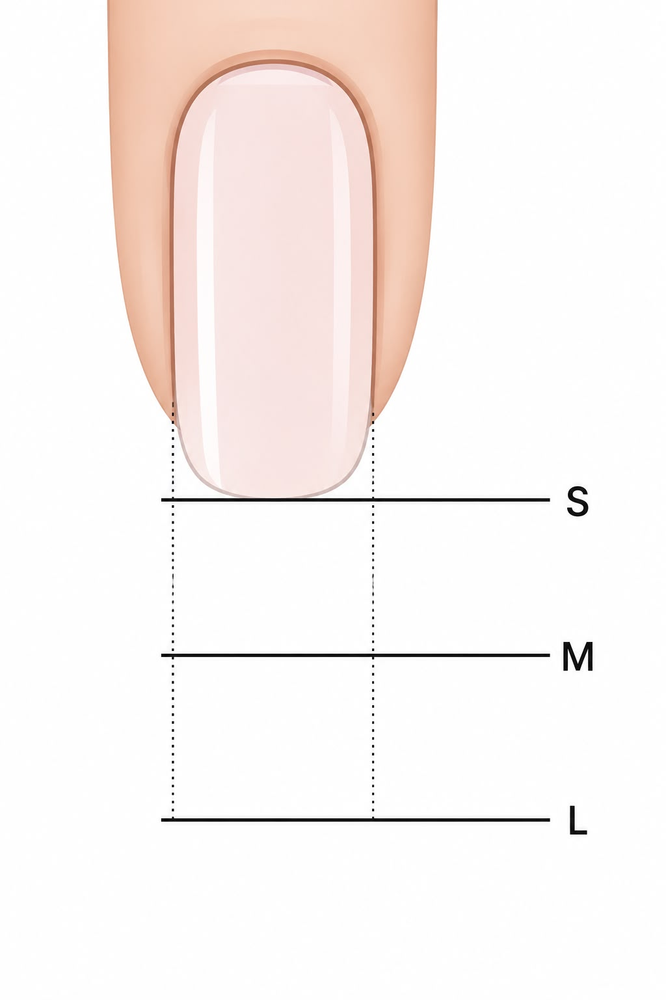

Manicura Rusa que de verdad dura 5 semanas
Cutículas limpias. Cero desprendimiento. Gel que sigue impecable en la quinta semana.
Elige tu artista de uñas
Misma técnica, mismo estándar de 5 semanas, las dos. La única pregunta real es tuya: ¿puedes esperar dos o tres semanas por Ksenia, o quieres tus manos listas esta semana?

Ksenia
Artista principal de uñas · Campeona Nailympia 2025 · DueñaGanadora de competencia mundial. Su agenda se llena rápido porque las clientas vuelven a reservar antes de irse. Si no tienes prisa, vale la espera.
Normalmente reservada con 2–3 semanas de anticipación. @kseni.nailartist
Anastasia
Especialista en uñas · Experta en pedicura smartMisma técnica, mismo estándar de 5 semanas. Las clientas que no pueden esperar la agenda de Ksenia reservan con Anastasia — y vuelven con ella cada vez.
Disponible esta semana.Servicios de uñas
Si tu gel se rinde en la segunda semana, no estás pagando una manicura — estás pagando dos, más la tarde que pasas arreglándola. Elige por lo que quieres: máxima duración, largo extra o un acabado natural y limpio. La técnica corre por nuestra cuenta.
Manicura

Manicura Rusa en Gel
Ideal para cutículas limpias, cero desprendimiento y duración de 5 semanas. El trabajo preciso de cutícula retira solo el tejido muerto. Resultado: aplicación limpia, bordes perfectos y gel que dura hasta 5 semanas sin desprenderse ni astillarse.

Extensión de Gel Duro
Ideal si quieres largo extra sin un aspecto voluminoso. Las extensiones de gel estructurado refuerzan las uñas débiles o finas manteniéndose ligeras y de aspecto natural.

Manicura con Esmalte Tradicional
Manicura de precisión con trabajo profesional de cutícula y esmalte tradicional de alta calidad. Uñas limpias y pulidas, sin gel.

Pedicura

Pedicura Rusa Smart en Gel
Ideal para pies más suaves y un acabado pulido de larga duración. Pedicura smart avanzada con exfoliación profunda, trabajo preciso de cutícula y color en gel que se mantiene limpio por más tiempo.

Pedicura con Esmalte Tradicional
Pedicura completa con modelado de uña, suavizado de la piel y esmalte clásico.

Extras (remoción y diseño)

Remoción de Esmalte en Gel
Remoción segura de producto no aplicado por nosotros (remoción externa). Gratis si lo aplicamos nosotros.

Diseños de Uñas
Punta francesa, ombré, chrome, stamping o arte simple. Por favor reserva tiempo extra.
Toca cualquier precio para reservar con tu especialista preferida.
Sin astillas. Sin desprendimiento. Solo uñas que duran.
Maria lo dijo claro: «Mi gel duró 4.5 semanas — nunca me había pasado en ningún otro lado.» Por eso la gente viene una vez y deja de buscar.
¿Te suena familiar?
Escuchamos las mismas historias una y otra vez. Elige la tuya — te explicamos por qué pasa y cómo lo resolvemos.
Tus preguntas,
respondidas
-
Una manicura normal empuja o corta la cutícula. La manicura rusa usa fresas eléctricas de precisión para retirar solo el tejido muerto — dejando la piel viva completamente intacta. El resultado es un lecho ungueal visiblemente más limpio y ceñido, y un gel que se adhiere sin desprendimiento. Por eso dura hasta 5 semanas sin astillarse.
-
El desprendimiento prematuro casi siempre se debe a una remoción incompleta de la cutícula o a una mala preparación de la uña. La técnica rusa elimina ambas causas. La diferencia suele notarse para el día 3 — e inconfundible en la semana 3.
-
Sí — realizada correctamente, la manicura rusa es más segura que los métodos tradicionales. Retira solo el tejido muerto con fresas de precisión, dejando intactas la piel viva y la matriz de la uña. El resultado son uñas más sanas con el tiempo.
-
Cada instrumento de uñas se esteriliza en autoclave y se sella en bolsas estériles individuales. Abrimos tu set frente a ti al inicio de cada cita. Las limas y pulidores son de un solo uso — se desechan después de cada cliente.
-
Manicura Rusa en Gel: aproximadamente 2 horas. Pedicura Smart en Gel: aproximadamente 2 horas. Ambas juntas: 3.5–4 horas (recomendamos reservar en días distintos). La hora de tu cita es tu hora de inicio — estudio privado, sin esperas.
-
Ambas ofrecen la misma técnica rusa de precisión y el mismo estándar de 5 semanas. Para arte de uñas muy detallado, Ksenia es ideal. Para una manicura rusa impecable con excelente disponibilidad, Anastasia es una opción excelente y normalmente tiene turnos más pronto.
¿Lista para por fin encontrar a tu persona de uñas?
Reserva en 60 segundos. Sin llamadas. Cancelación gratis hasta 24 horas.
Reserva en 60 segundosAventura, FL
20200 W Dixie Hwy, STE 1105B
Aventura, FL 33180
🅿️ Estacionamiento gratis
Estacionamiento gratis dentro del edificio. Entra por el costado. Estaciónate en cualquier lugar AMARILLO.
Lun – Sáb: 9:00 AM – 8:00 PM

Largo de uña — S / M / L
El precio de Ksenia depende del largo del borde libre
- S Corta — borde libre corto, apenas pasando la yema
- M Media — borde libre moderado
- L Larga — borde libre pronunciado
¿No sabes cuál es la tuya? Confirmamos el largo al inicio de la cita.